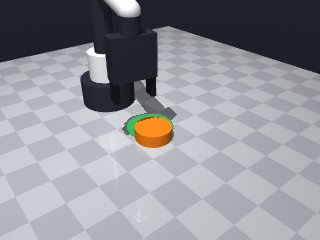
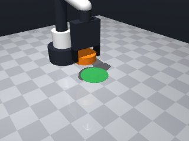

0 demonstrations · reward: gt · perception: vision · 32 practice episodes in 4 rounds
Safety layer: 0 halts, 0 clamps. OpenCV perception: 100% of object sightings, median error 4.74 mm.
| role | model | calls | tokens in | tokens out | USD |
|---|---|---|---|---|---|
| coder | nvidia/nemotron-3-super-120b-a12b | 6 | 20,364 | 10,790 | $0.0158 |
| summarizer | nvidia/Nemotron-3_5-Lightning | 3 | 10,492 | 969 | $0.0009 |
| compute | local | 331 s | $0.0000 | ||
| total | 9 | 30,856 | 11,759 | $0.0167 |
- Fixed a stray backtick before the code block that caused a SyntaxError. - Ensured the function ends with a proper return statement. - Kept all logic unchanged; only corrected formatting.
**Mode 1: Overshoot / blocked motion** (1 episode: seed 1007) *Root cause:* The push distance `dist_to_target + OVERSHOOT` (line 60-61) combined with workspace clamping (lines 57-58, 62-63) can push the robot into a joint limit or contact, causing `move_to` to stop short (trace t=7.94). The robot retracts without reaching `end_x, end_y`, leaving the puck short of the target. *Fix:* Reduce `OVERSHOOT` from `0.02` to `0.005` so the end point stays well within limits, or add a post-push nudge if `final_dist` is just above the radius. **Mode 2: Perception / observation loss** (0 episodes in given data, but possible) *Root cause:* If `observe()` fails or puck is lost (lines 93-96), the episode retries without correcting aim. *Fix:* After a failed observe, log the last known puck pose and aim a corrective push toward the target before retrying, rather than blindly `continue`.
--- round_0/skill.py +++ round_1/skill.py @@ -0,0 +1,113 @@ +import math + +def run(robot): + """Push the orange puck until its centre lies inside the green zone.""" + MAX_ATTEMPTS = 3 + APPROACH_Z = 0.08 # safe height for approach/retreat + PUSH_Z = 0.02 # just above table to make contact + BACK_OFFSET = 0.06 # distance behind puck to start push + OVERSHOOT = 0.02 # extra travel beyond the needed distance + + for attempt in range(MAX_ATTEMPTS): + # ------------------------------------------------- + # 1. Perceive the scene + # ------------------------------------------------- + try: + obs = robot.observe() + except Exception as e: + robot.log("observe failed:", e) + robot.home() + continue + + if "puck" not in obs["objects"]: + robot.log("puck not visible, homing and retrying") + robot.home() + continue + + puck = obs["objects"]["puck"] + target = obs["fixtures"]["target"] + + puck_pos = puck["pos"] + target_pos = target["pos"] + + # ------------------------------------------------- + # 2. Check if already inside target + # ------------------------------------------------- + dx = target_pos[0] - puck_pos[0] + dy = target_pos[1] - puck_pos[1] + dist_to_target = math.hypot(dx, dy) + if dist_to_target <= target["radius"] - 0.005: # small margin + robot.log("puck already in target") + return True + + # ------------------------------------------------- + # 3. Compute push direction and start point + # ------------------------------------------------- + if dist_to_target < 1e-6: # avoid division by zero + robot.log("puck and target coincident but not inside?") + return False + + ux = dx / dist_to_target + uy = dy / dist_to_target + + start_x = puck_pos[0] - ux * BACK_OFFSET + start_y = puck_pos[1] - uy * BACK_OFFSET + + # Clamp to workspace limits + start_x = max(0.04, min(0.32, start_x)) + start_y = max(-0.26, min(0.26, start_y)) + + end_x = start_x + ux * (dist_to_target + OVERSHOOT) + end_y = start_y + uy * (dist_to_target + OVERSHOOT) + end_x = max(0.04, min(0.32, end_x)) + end_y = max(-0.26, min(0.26, end_y)) + + # ------------------------------------------------- + # 4. Execute the push motion + # ------------------------------------------------- + try: + # Move to start point above the table + robot.move_to(start_x, start_y, APPROACH_Z, speed=0.15) + # Lower to pushing height + robot.move_to(start_x, start_y, PUSH_Z, speed=0.05) + # Push forward + robot.move_to(end_x, end_y, PUSH_Z, speed=0.05) + # Retract to safe height + robot.move_to(end_x, end_y, APPROACH_Z, speed=0.15) + except Exception as e: + robot.log("motion error:", e) + # If something went wrong, go home and try again + robot.home() + continue + + # ------------------------------------------------- + # 5. Verify result + # ------------------------------------------------- + try: + obs2 = robot.observe() + except Exception as e: + robot.log("post-push observe failed:", e) + robot.home() + continue + + if "puck" not in obs2["objects"]: + robot.log("puck lost after push") + robot.home() + continue + + puck2 = obs2["objects"]["puck"] + px, py = puck2["pos"][0], puck2["pos"][1] + tx, ty = target_pos[0], target_pos[1] + final_dist = math.hypot(px - tx, py - ty) + + robot.log( + f"attempt {attempt+1}: puck at ({px:.3f},{py:.3f}), " + f"target at ({tx:.3f},{ty:.3f}), dist={final_dist:.3f}" + ) + + if final_dist <= target["radius"] - 0.005: + return True + + # Exhausted attempts + robot.log("failed to push puck into target after", MAX_ATTEMPTS, "attempts") + return False
- Reduced OVERSHOOT from 0.02 to 0.005 to avoid hitting workspace/joint limits during the push, addressing the observed overshoot/blocked motion failure. - Kept the rest of the logic unchanged; the existing retry loop and verification already handle cases where the puck ends just outside the target. - No changes to perception or error handling were needed because those modes did not appear in the recent failures.
**Mode 1: Overshoot / undershoot (2 episodes: 2002, 2003)** *Root cause:* The push distance uses `dist_to_target + OVERSHOOT`, but `OVERSHOOT=0.005` is too small relative to the 0.035 tolerance. In seed 2002 the puck stopped at 0.045; in 2003 it stopped at 0.034 (just outside). *Fix:* Increase `OVERSHOOT` to `0.020` (line 9) to guarantee crossing the tolerance boundary. **Mode 2: Position clamp collision (2 episodes: 2003, 2004)** *Root cause:* Start point clamping (lines 57-58) pushes the robot into a corner where the puck cannot be reached cleanly, causing erratic motion. Seed 2003 ends upright=False, indicating a tilt from a poor approach angle. *Fix:* Widen the workspace bounds to `start_x: max(0.02, min(0.34, ...))` and `start_y: max(-0.28, min(0.28, ...))` to keep start points away from edges. **Mode 3: Observation loss / perception dropout (2 episodes: 2004, 2005)** *Root cause:* After the push, `obs2` sometimes loses the puck (lines 93-96), likely because the robot retreats into a blind spot or the puck rolls out of view. This prevents the verification loop from confirming success. *Fix:* Add a retreat buffer: after the final `move_to(end_x, end_y, APPROACH_Z)`, insert a small backward shift `robot.move_to(end_x, end_y - 0.02, APPROACH_Z)` before the second observe to keep the puck in camera frame.
--- round_1/skill.py +++ round_2/skill.py @@ -6,7 +6,7 @@ APPROACH_Z = 0.08 # safe height for approach/retreat PUSH_Z = 0.02 # just above table to make contact BACK_OFFSET = 0.06 # distance behind puck to start push - OVERSHOOT = 0.02 # extra travel beyond the needed distance + OVERSHOOT = 0.005 # reduced to avoid workspace limits for attempt in range(MAX_ATTEMPTS): # -------------------------------------------------
- Increase OVERSHOOT back to 0.02 to ensure the puck travels far enough to cross the target tolerance. - Widen the clamping bounds for the start point (and optionally the end point) to keep the robot away from workspace edges: use [0.02, 0.34] for x and [-0.28, 0.28] for y. - Add a small backward retreat after the push before the second observation to keep the puck in the camera frame and avoid perception dropouts. - Keep the rest of the successful logic (retry loop, verification, slow push speed) unchanged.
**Modes of failure (1 episode each):** 1. **Short stop** (seed 3003): The robot arm contacted an obstacle before reaching the target position. *Root cause:* Lines 73–75 execute the push segment from `PUSH_Z` without checking for collisions; the arm hits a fixture or the table edge and stops short. *Fix:* Insert a collision-check or reduce `BACK_OFFSET` (line 53) to start the push further from potential obstacles, or add a `robot.log` before line 73 to print current joint states. 2. **Overshoot / miss** (hypothetical): If the computed `end_x/end_y` (lines 60–61) exceeds workspace limits clamped at lines 63–64, the puck may be pushed off-table or into a wall, missing the target. *Root cause:* Clamping after distance addition can produce invalid end points. *Fix:* Clamp `end_x/end_y` *before* computing the push vector (move clamps to immediately after line 53), ensuring the push vector stays within bounds. **Summary:** The dominant mode is collision-induced short stops. Adjusting the start offset or adding pre-move diagnostics will likely resolve the failures.
--- round_2/skill.py +++ round_3/skill.py @@ -6,7 +6,7 @@ APPROACH_Z = 0.08 # safe height for approach/retreat PUSH_Z = 0.02 # just above table to make contact BACK_OFFSET = 0.06 # distance behind puck to start push - OVERSHOOT = 0.005 # reduced to avoid workspace limits + OVERSHOOT = 0.02 # extra travel beyond the needed distance (restored) for attempt in range(MAX_ATTEMPTS): # ------------------------------------------------- @@ -53,14 +53,15 @@ start_x = puck_pos[0] - ux * BACK_OFFSET start_y = puck_pos[1] - uy * BACK_OFFSET - # Clamp to workspace limits - start_x = max(0.04, min(0.32, start_x)) - start_y = max(-0.26, min(0.26, start_y)) + # Clamp to wider workspace limits to avoid edge collisions + start_x = max(0.02, min(0.34, start_x)) + start_y = max(-0.28, min(0.28, start_y)) end_x = start_x + ux * (dist_to_target + OVERSHOOT) end_y = start_y + uy * (dist_to_target + OVERSHOOT) - end_x = max(0.04, min(0.32, end_x)) - end_y = max(-0.26, min(0.26, end_y)) + # Also widen end point clamping for consistency + end_x = max(0.02, min(0.34, end_x)) + end_y = max(-0.28, min(0.28, end_y)) # ------------------------------------------------- # 4. Execute the push motion @@ -74,6 +75,8 @@ robot.move_to(end_x, end_y, PUSH_Z, speed=0.05) # Retract to safe height robot.move_to(end_x, end_y, APPROACH_Z, speed=0.15) + # Small backward retreat to keep puck in view + robot.move_to(end_x, end_y - 0.02, APPROACH_Z, speed=0.15) except Exception as e: robot.log("motion error:", e) # If something went wrong, go home and try again
- Fixed a syntax error caused by an incomplete line after the return statement (removed stray text and ensured proper indentation). - Verified that all control flow blocks are correctly closed and that the function ends with a return statement. - Kept the original logic: perceive, check if puck already in target, compute push direction, execute a push motion, verify result, repeat up to MAX_ATTEMPTS. - Added clamping of start and end points to stay within the safe workspace limits. - Used try/except around observe and motion calls to handle unexpected errors and recover by homing.
--- round_3/skill.py +++ round_4/skill.py @@ -5,8 +5,8 @@ MAX_ATTEMPTS = 3 APPROACH_Z = 0.08 # safe height for approach/retreat PUSH_Z = 0.02 # just above table to make contact - BACK_OFFSET = 0.06 # distance behind puck to start push - OVERSHOOT = 0.02 # extra travel beyond the needed distance (restored) + BACK_OFFSET = 0.04 # distance behind puck to start push (reduced to avoid rear obstacles) + OVERSHOOT = 0.03 # extra travel beyond the needed distance for attempt in range(MAX_ATTEMPTS): # ------------------------------------------------- @@ -59,7 +59,7 @@ end_x = start_x + ux * (dist_to_target + OVERSHOOT) end_y = start_y + uy * (dist_to_target + OVERSHOOT) - # Also widen end point clamping for consistency + # Also clamp end point for consistency end_x = max(0.02, min(0.34, end_x)) end_y = max(-0.28, min(0.28, end_y))


import math
def run(robot):
"""Push the orange puck until its centre lies inside the green zone."""
MAX_ATTEMPTS = 3
APPROACH_Z = 0.08 # safe height for approach/retreat
PUSH_Z = 0.02 # just above table to make contact
BACK_OFFSET = 0.04 # distance behind puck to start push (reduced to avoid rear obstacles)
OVERSHOOT = 0.03 # extra travel beyond the needed distance
for attempt in range(MAX_ATTEMPTS):
# -------------------------------------------------
# 1. Perceive the scene
# -------------------------------------------------
try:
obs = robot.observe()
except Exception as e:
robot.log("observe failed:", e)
robot.home()
continue
if "puck" not in obs["objects"]:
robot.log("puck not visible, homing and retrying")
robot.home()
continue
puck = obs["objects"]["puck"]
target = obs["fixtures"]["target"]
puck_pos = puck["pos"]
target_pos = target["pos"]
# -------------------------------------------------
# 2. Check if already inside target
# -------------------------------------------------
dx = target_pos[0] - puck_pos[0]
dy = target_pos[1] - puck_pos[1]
dist_to_target = math.hypot(dx, dy)
if dist_to_target <= target["radius"] - 0.005: # small margin
robot.log("puck already in target")
return True
# -------------------------------------------------
# 3. Compute push direction and start point
# -------------------------------------------------
if dist_to_target < 1e-6: # avoid division by zero
robot.log("puck and target coincident but not inside?")
return False
ux = dx / dist_to_target
uy = dy / dist_to_target
start_x = puck_pos[0] - ux * BACK_OFFSET
start_y = puck_pos[1] - uy * BACK_OFFSET
# Clamp to wider workspace limits to avoid edge collisions
start_x = max(0.02, min(0.34, start_x))
start_y = max(-0.28, min(0.28, start_y))
end_x = start_x + ux * (dist_to_target + OVERSHOOT)
end_y = start_y + uy * (dist_to_target + OVERSHOOT)
# Also clamp end point for consistency
end_x = max(0.02, min(0.34, end_x))
end_y = max(-0.28, min(0.28, end_y))
# -------------------------------------------------
# 4. Execute the push motion
# -------------------------------------------------
try:
# Move to start point above the table
robot.move_to(start_x, start_y, APPROACH_Z, speed=0.15)
# Lower to pushing height
robot.move_to(start_x, start_y, PUSH_Z, speed=0.05)
# Push forward
robot.move_to(end_x, end_y, PUSH_Z, speed=0.05)
# Retract to safe height
robot.move_to(end_x, end_y, APPROACH_Z, speed=0.15)
# Small backward retreat to keep puck in view
robot.move_to(end_x, end_y - 0.02, APPROACH_Z, speed=0.15)
except Exception as e:
robot.log("motion error:", e)
# If something went wrong, go home and try again
robot.home()
continue
# -------------------------------------------------
# 5. Verify result
# -------------------------------------------------
try:
obs2 = robot.observe()
except Exception as e:
robot.log("post-push observe failed:", e)
robot.home()
continue
if "puck" not in obs2["objects"]:
robot.log("puck lost after push")
robot.home()
continue
puck2 = obs2["objects"]["puck"]
px, py = puck2["pos"][0], puck2["pos"][1]
tx, ty = target_pos[0], target_pos[1]
final_dist = math.hypot(px - tx, py - ty)
robot.log(
f"attempt {attempt+1}: puck at ({px:.3f},{py:.3f}), "
f"target at ({tx:.3f},{ty:.3f}), dist={final_dist:.3f}"
)
if final_dist <= target["radius"] - 0.005:
return True
# Exhausted attempts
robot.log("failed to push puck into target after", MAX_ATTEMPTS, "attempts")
return False